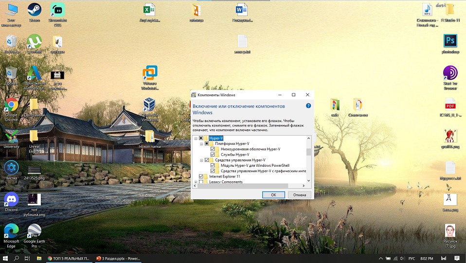
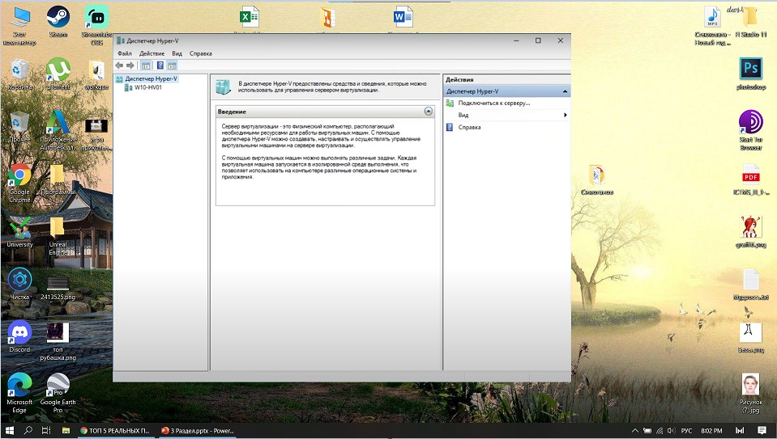
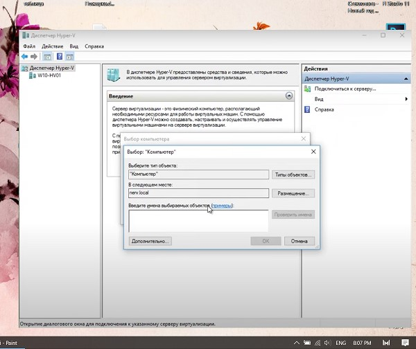
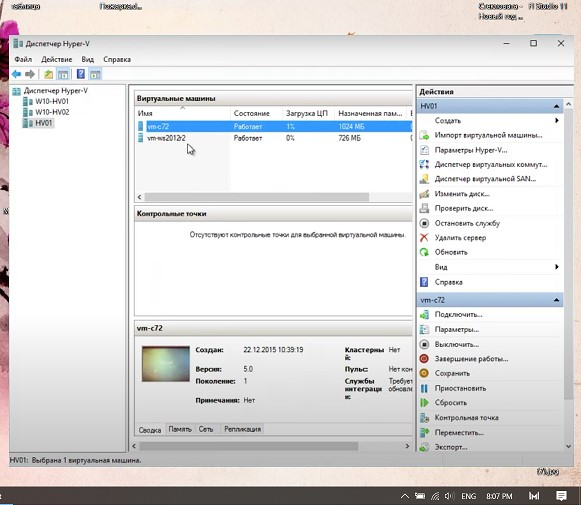
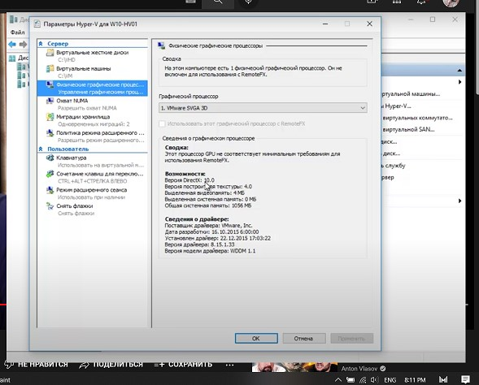
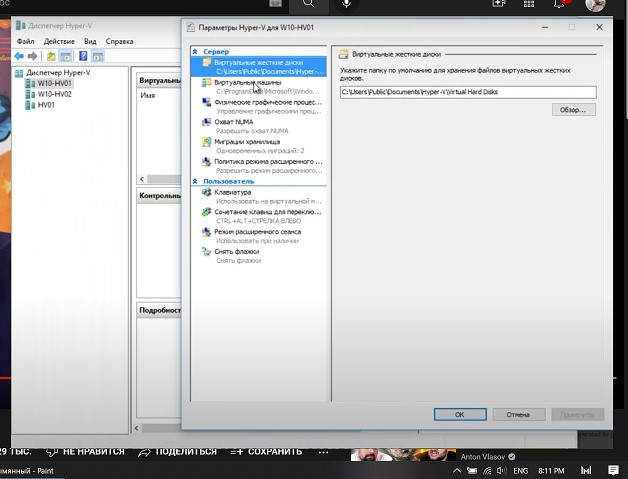

Hyper-V-Win10 |
| Hyper-V — это продукт виртуализации оборудования Майкрософт. Она позволяет создавать и запускать программную версию компьютера, называемую виртуальной машиной. Каждая виртуальная машина действует как полноценный компьютер, запускающий операционную систему и программы. Если вам нужны вычислительные ресурсы, виртуальные машины предоставляют больше гибкости, помогают экономить время и деньги и являются более эффективным способом использования оборудования, чем запуск одной операционной системы на физическом оборудовании. |
| Hyper-V выполняет каждую виртуальную машину в отдельном изолированном пространстве. Это означает, что на одном и том же оборудовании можно запускать несколько виртуальных машин одновременно. Это можно сделать, чтобы избежать таких проблем, как сбой, влияющих на другие рабочие нагрузки, или предоставить другим пользователям, группам или службам доступ к разным системам. |
| Установка программы может производится только через компоненты windows. Там нужно найти компонент Hyper-V и включить его. |
|  |
| Рис. 1 Запуск Hyper-V |
| Начальный экран программы имеет очень маленький функционал. Все потому, что мы еще не подключили программу к нашему устройству. Необходимо исполнить специальный код в PowerShell. |
|  |
| Рис. 2 Начальный экран |
| После запуска команды через PowerShell – мы можем подключиться к серверу – выбрать мост и имя нашей виртуальной машины. |
|  |
| Рис. 3 Подключение к серверу |
| После подключения к серверу мы можем выбрать машину и изменить ее настройки, запустить ее. Также из действий запускается проверка диска или изменение диска. |
|  |
| Рис. 4 Действия над машиной |
| Настроек машины всего 2. Это выбор графического процессора и места для хранения данных на диске. Также отдельно можно выделить расширение сеанса – это когда все файлы могут переправляться между локальным устройством и виртуальным. |
|  |
| Рис. 5 Настройки машины |
|  |
| Рис. 6 Настройки машины |
| Вывод: Программа может быть запущена только на Windows 10 professional, education, pro edition. На остальных ОС установка невозможна. Программа имеет сложный интерфейс – нужно запускать подключение ее к серверу и пк через PowerShell. Так что без использования сторонних источников – не получится запустить образ. Настроек у машины – почти нет. |